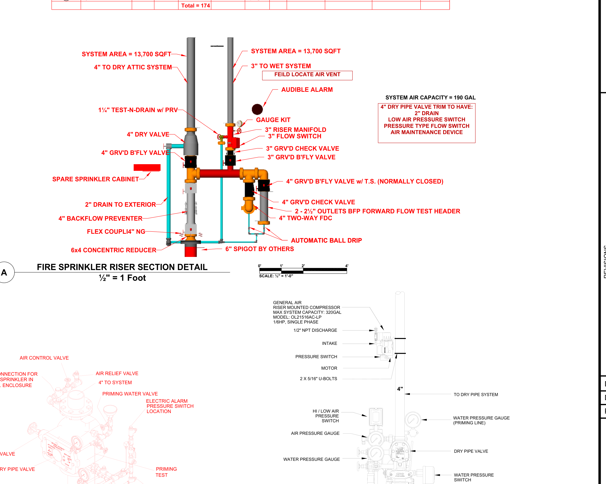

Top-down drainage and riser evidence
The actual approved FP2.0 page is embedded as the drawing surface. The overlay marks only extracted PDF coordinates. Dashed red circles are unresolved field-route intents, not invented pipe.
As-built riser section plus calculation elevation chain
The source image already shows the dry riser, wet riser, backflow, two-way FDC, forward-flow test header, and two-inch exterior drain. The adjacent chain supplies exact approved hydraulic elevations without pretending that section-diagram X is installed plan X.

Bounded PDF-to-3D system evidence
The full approved plan is the ground texture. Green rings are source low-point intents; red rings are field-route drum-drip intents. Only node 118 and base-of-riser node 414 rise to exact calculation Z. No connecting installation pipe is drawn because that 3D route is not yet proven.
System-owned verification loops
Acceptance boundary
Loading blockers...